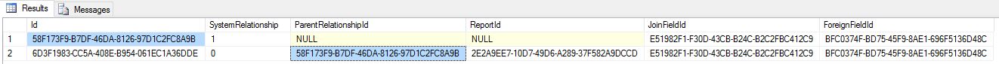

Izenda Database Behaviors¶
Soft Delete¶
Instead of physically removing rows, Izenda will set the Deleted flag on
them to preserve historical data. Therefore, normal-case queries should
always include a Deleted = 0 condition.
Report/Dashboard-specific Data¶
Report Relationship Data¶
Each report uses its own set of relationships. Report creators are free to modify or remove the default relationships suggested from Data Model or create new ones. Therefore, IzendaRelationship table stores both Data Model relationships (without a ReportId) and Report-specific relationships (with a value in ReportId). Report-specific relationships will also be deleted along with the report.
Example:
Fig. 441 Data Model and Report Relationships.png
- First row is a Data Model relationship.
- Second row is a Report relationship with value in ReportId, and copied from the Data Model relationship above.
Dashboard Filter Data¶
Dashboard part can use a different filter value than the specified value in the included report part. Therefore, dashboard part filter data is stored in the separate table IzendaDashboardPartFilterField, with the default values copied from report filter data in Izenda(ReportPart)FilterField.
Subscription Filter Data¶
Specific subscriptions can also choose to use a different filter value than the one in report/dashboard. Therefore, subscription filter data is also stored in a separate table IzendaSubscriptionFilterField.
History Tables¶
History tables are used to keep previous versions of the data in a separate place, for specific Izenda features:
IzendaReportHistory
to display in View Report History in Report List.
IzendaPasswordHistory
to validate against new passwords following System Configuration/Security Policies.
Note
Normal tables only retain deleted data for a short time before archiving, and do not keep updated data. Hence, there should be no attempt to read history information from them.